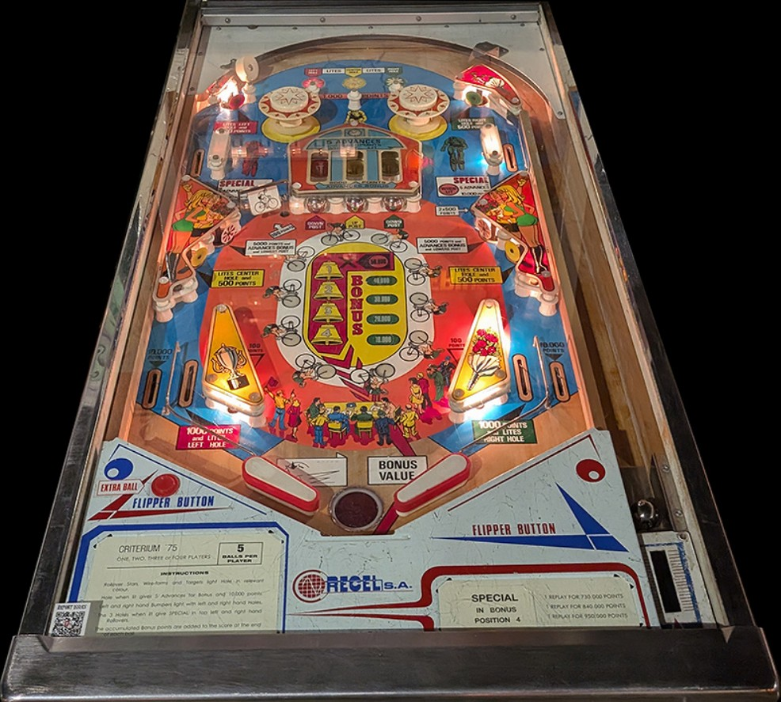

Criterium 75 is the 4-player version. Criterium 2000 is the 1-player version with identical rules and scoring.
Build the end of ball bonus by nudging the ball into the upper side lanes whenever it is at the top of the table, or shooting the captive balls. Once the end of ball bonus is maxed out at 200,000 points, stay at the top of the table as much as possible to try to get safe big points from the upper side lanes. The center captive ball raises the center post, while the other captive balls and the red+white standup targets lower it.
The below picture of Criterium 75's playfield was taken from the Open Pinball Database.

The top rollover buttons score 1,000 points and light the left, center, and right captive balls respectively. You can also light the left captive ball with the top left standup target or left in lane; the center captive ball with the lower target in each side pair; and the right captive ball with the top right standup target or right in lane. The in lanes score 1,000 points, and any standup target that lights a captive ball scores 500.
Knocking a captive ball backwards into its saucer scores 5,000 points and 2 bonus advances if the saucer is not lit; if the saucer is lit, the captive ball scores 10,000 points and 5 bonus advances, then unlights the saucer. Captive balls are kicked out of their saucers immediately. If all three saucers are lit at once, the upper side lanes will be lit for Special, which can score a free game or an extra ball (maximum 1 per ball in play).
Each spin of the spinner or hit to either slingshot scores 100 points and moves the lit bicyclist one position. 10 movements of the cyclist awards 1 bonus advance. You can also get 1 bonus advance from the upper target in each side pair, 2 bonus advances from an unlit captive ball hole, and 5 bonus advances from a lit captive ball hole or upper side lane. Each bonus advance is worth 10,000 points in bonus at the end of the ball. A maximum of 200,000 bonus points can be accrued each ball, which cannot be multiplied or collected mid-ball. Under some game settings, a Special can be awarded for reaching certain bonus thresholds. Bonus is a very significant portion of scoring, so take care not to tilt in any circumstance other than trying to save a house ball.
Out lanes score 10,000 points. In lanes score 1,000 points and light the left and right captive ball holes respectively. There is a center post between the flippers which completely blocks off the flipper gap when raised. The center post can only be raised at the center captive ball; the left and right captive balls as well as the upper target in each side pair will lower the center post if it is raised.